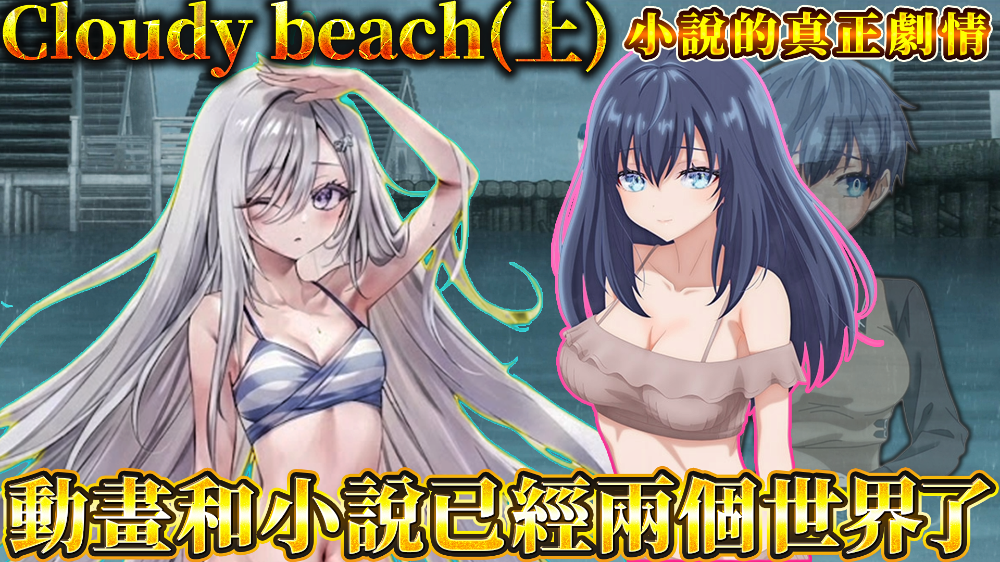

播放預覽把複雜的故事線整理成容易進入的觀看體驗，保留作品的情緒，也讓第一次接觸的觀眾快速理解世界觀。
查看頻道
熊哥的網站
作品集 / 2026
動畫推薦、影音企劃與個人創作，依照觀看順序收在這裡。

播放預覽把複雜的故事線整理成容易進入的觀看體驗，保留作品的情緒，也讓第一次接觸的觀眾快速理解世界觀。
查看頻道
INTERACTIVE / GAME
repeat
© 2026 熊哥的網站. All rights reserved.